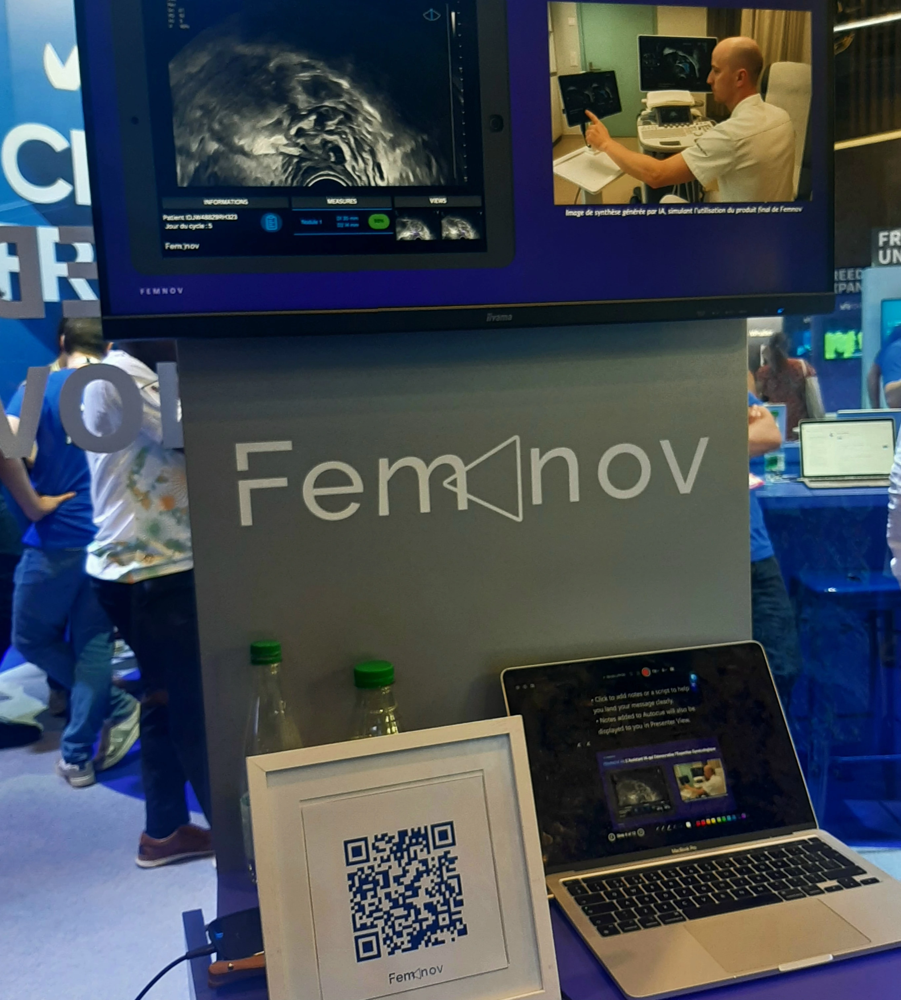

Je suis férue de technologie, et j'ai eu l'opportunité cette année de retourner à Vivatech après 3 ans pour cette 10ème édition. J'ai pu observer et échanger avec des professionnels sur de nombreux stands très intéressants. Voici ceux qui m'ont le plus marqués.

1 — Infrastructures et Cloud
- Data4 — Groupe française qui opère des datacenters européens. Le but est de rendre plus durable ces développements avec un procédé biocirculaire (récupération de chaleur, économie circulaire).
- OVH Cloud — Souveraineté cloud européenne.
- Grepow Battery — Solutions de batteries sur-mesure.

2 — GreenTech
WASE — C'est la start-up qui m'a le plus marquée. Des bactéries électroactives qui convertissent les eaux usées industrielles en biométhane, 30 % de rendement en plus et 10× plus vite que les filières classiques. J'ai pu échanger avec une responsable sur le stand. Note : ENGIE y a déjà investi.


- Envision — Géant des énergies renouvelables, partenaire officiel de l'édition 2026.
- Climate Impulse — Un avion zéro émission en développement.
- ENERDRAPE — Échangeurs géothermiques intégrés dans les infrastructures souterraines (parkings, tunnels).
- Treeless, Everimpact, GoCO2 — Décarbonation et compensation carbone.
3 — Cyber
- Risk Hunter — Cybersécurité défensive et sensibilisation aux risques cyber industriels.
- NestSentinel, ANFR — Surveillance réseau et sécurité des fréquences.

Alice et Bob — La start-up notoire française en quantique, financée par France 2030. Leur technologie de cat qubits réduit drastiquement les erreurs de calcul sans les milliers de qubits redondants des approches classiques. Ils ont signé pendant Vivatech la première acquisition mondiale d'un ordinateur quantique à cat qubits par l'État français.
4 — Santé
Femnov — Diagnostic des maladies féminines telle que l'endométriose, assisté par IA. Dans un secteur où les rendez-vous sont longs à obtenir et où les femmes ont longtemps été exclues des essais cliniques, c'est une avancée qui compte.
- Spore.Bio — Détection rapide de contaminations biologiques.
- INNOPHYS — Exosquelettes d'assistance physique.

Ce que je retiens
Je n'ai pas pu tout voir, mais j'ai pu connaître des innovations dans l'énergie, la santé et la sécurité, et échangé et rentrer dans l'univers de passionné(e)s. Cette journée a ainsi été l'opportunité de gagner en compréhension et visibilité sur mon domaine mais aussi d'en apprendre plus sur d'autres, ce qui est toujours instructif et j'en suis donc reconnaissante.